DDNeRF: Depth Distribution Neural Radiance fields
Department of Computer Science, Reichman University, Israel
Shadow Estimation Code and Model
|
Abstract
|
The field of implicit neural representation has made significant progress.
Models such as neural radiance fields (NeRF), which uses relatively small
neural networks, can represent high-quality scenes and achieve state-of-the-art results for novel view
synthesis. Training these types of networks, however, is still computationally expensive and the model
struggles with real life $360\degree$ scenes. In this work, we propose the depth distribution
neural radiance field (DDNeRF) , a new method that significantly increases sampling efficiency along
rays during training, while achieving superior results for a given sampling budget. DDNeRF achieves
this performance by learning a more accurate representation of the density distribution along rays.
More specifically, the proposed framework trains a coarse model to predict the internal distribution
of the transparency of an input volume along each ray. This estimated distribution then guides the
sampling procedure of the fine model. Our method allows using fewer samples during training while
achieving better output quality with the same computational resources.
|
Method
Algorithm Overview
DeepShadow takes the light source location \(L^j\) and pixel coordinates \(({u, v)}\) as inputs,
along with the estimated depth \(\hat{d}\) from the MLP, and outputs an estimate of the shadow map
\(\hat{S^j}\) at each pixel location. The ground-truth shadow map \(S^j\) is then used as a
supervision to optimize the learned depth map \(\hat{d}\).
Flow of our Method
|
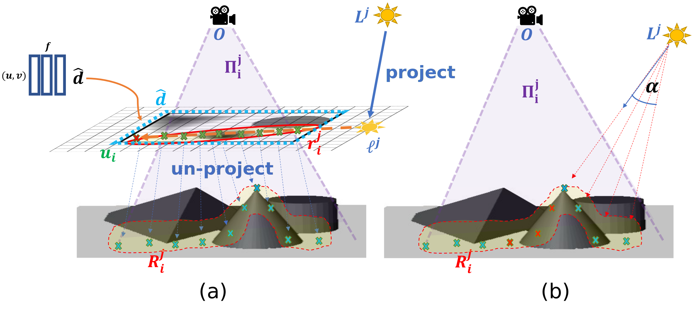
|
Left - The light source \(L^j\) is projected onto the image plane to receive \(\boldsymbol\ell^j\). A ray \(\mathbf{r}_i^j\) of \((u,v)\) points is created
between \(\boldsymbol\ell^j\) and \(\mathbf{u}_i\). Then, each point with its estimated depth \(\hat{d}\) is unprojected to world coordinates.
Right - The shadow line scan algorithm is used on points in 3D space to calculate shadowed pixels.
Red points are shadowed, since their angle to the light source is smaller than \(\alpha\).
Results
Partial Input Shadows
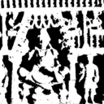
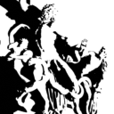
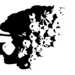
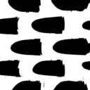
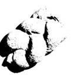
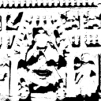
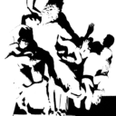
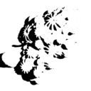
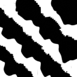
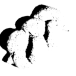
Depth Estimations
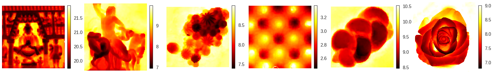
Surface Normals Estimations
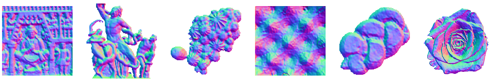
3D Reconstruction
Ground Truth 3D
Estimated 3D
Citation
@inproceedings{karnieli2022deepshadow,
title={DeepShadow: Neural shape from shadows},
author={Asaf Karnieli, Ohad Fried, Yacov Hel-Or},
year={2022},
booktitle={ECCV},
}
|
Acknowledgements
This work was supported by the Israeli Ministry of Science and Technology under The National Foundation for Applied Science (MIA),
and by the Israel Science Foundation (grant No. 1574/21).
|
Webpage template from here.